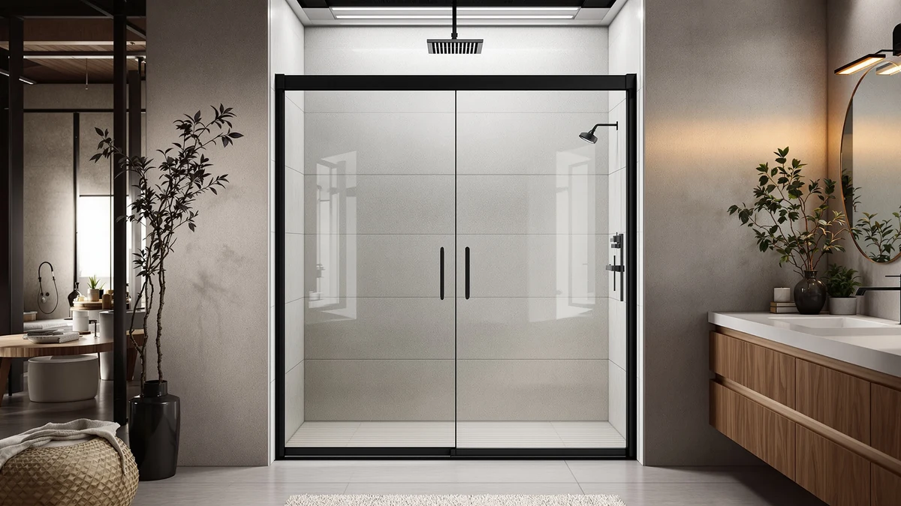

Things to Know Before You Buy
- A frameless glass door typically costs $200 to $600 installed, while a curtain and rod setup runs $20 to $80 total.
- Glass doors need a level, properly framed opening. Curved tubs, out-of-plumb walls, and odd angles often rule them out.
- Tempered glass resists cracking but still needs regular squeegeeing to avoid hard water spots and soap scum buildup.
- A fabric curtain and plastic liner wear out faster than glass and need replacing every one to two years in most households.
- Renters usually do better with a curtain, since most leases don't allow permanent glass hardware mounted to tile.
The glass shower doors vs curtain decision shapes your upfront budget, how much time you spend cleaning, and how your bathroom looks for the next decade. One option is a one-time purchase that adds resale value; the other is a cheap, flexible fix you can swap out in minutes.
Glass doors win on durability and appearance, and a curtain wins on price and flexibility for awkward layouts or rental units. The right pick depends less on which option is objectively better and more on your tub shape, your lease terms, and how long you plan to stay in the home.
Quick Answer
For a primary bathroom you own and plan to keep for years, a frameless glass shower door is the stronger long-term investment, and Aurisal's stainless steel sliding door is a solid example of the category at a mid-range price. For renters, guest bathrooms, or tubs with an irregular curve, a curtain remains the more practical and far cheaper choice.
What is Glass Shower Doors?
A glass shower door is a fixed or sliding panel, usually tempered glass between 3/8 and 1/2 inch thick, mounted to the tub or shower pan with metal hardware. Frameless designs use minimal aluminum or stainless steel brackets and hinges, letting the glass itself carry most of the visual weight. Framed and semi-frameless versions wrap more metal around the edges, which costs less but reads as more dated in a 2026 bathroom.
Sliding doors, like the models compared here, run on a top track with rollers and work best for straight tub or shower openings between 44 and 60 inches wide. Pivot and hinged doors swing open instead, which suits walk-in showers without a tub lip. Either style requires drilling into tile or a shower pan, so installation is closer to a fixture upgrade than a swap-and-go accessory. Manufacturer spec sheets list glass thickness, hardware finish, and whether the unit ships with a reversible door for left- or right-hand installs.
Because the glass and hardware are permanent, buyers tend to treat this as a one-time decision tied to the bathroom's overall remodel rather than a product they expect to replace every season.
What is Curtain?
A shower curtain is a length of fabric or vinyl, typically 70 by 72 inches, that hangs from rings on a tension or permanently mounted rod. Most setups pair a decorative outer curtain with a plastic or EVA liner that does the actual water-blocking work, since the outer fabric alone is rarely waterproof on its own.
Curtains require no drilling if you use a tension rod, which makes them the default for rentals, dorms, and any bathroom where the tenant can't modify the wall. Rods mount in minutes, the curtain and liner cost under $40 combined in most cases, and swapping the look for a new color or pattern takes less effort than any other bathroom update. The tradeoff is that fabric and plastic liners mildew, discolor, and cling to skin during use in a way that glass never does.
Because nothing about a curtain setup is permanent, it's the easier option to get wrong on the first try and simply replace, which is part of why it remains common even in bathrooms that could support a glass door.
Head-to-Head: Build Quality & Durability
On raw durability, glass shower doors outlast curtains by years, not months. Tempered glass panels like the ones in the Aurisal and BoBliss doors compared here resist scratching, warping, and discoloration, and the stainless steel or aluminum hardware holds up to daily moisture exposure without rusting through in most climates. Rollers and hinges are the parts that eventually wear, and manufacturer warranties on these components typically run one to two years.
A curtain's weak point is the fabric and liner, not the rod. Vinyl liners develop mildew spots and soap scum within months in a humid bathroom with poor ventilation, and most owners report replacing liners every six to twelve months to keep things looking fresh. The outer decorative curtain lasts longer since it stays drier, but it absorbs moisture at the hem and can mildew there too if it isn't shaken out after each shower.
In the glass shower doors vs curtain durability comparison, glass is the clear long-term winner, but that durability only pays off if the opening is sized correctly and the hardware is installed square. A poorly fitted door leaks and loosens faster than a well-maintained curtain ever will.
Head-to-Head: Price & Value
The products compared here range from $249.30 for the ENSO SENKA and Ogonbrick doors up to $499.96 for the KPUY frameless model, with most frameless sliding doors landing in the $270 to $430 range before installation labor, which can add $100 to $300 more if you hire a contractor. A curtain, rod, and liner combination costs $20 to $80 total and requires no labor cost at all for a tension rod setup.
Value shifts once you account for lifespan. A glass door bought once can last 10 to 15 years with basic cleaning, while a curtain liner needs replacing every year, which adds up to $100 to $150 in liners alone over the same stretch, even before counting the rod and outer curtain. Glass doors also tend to add resale value to a bathroom, where curtains are viewed as a placeholder rather than a finished feature.
If your budget is tight today, a curtain wins outright. If you're comparing total cost over a decade, the math tilts back toward glass.
Head-to-Head: Use Experience
Day to day, a glass door keeps water contained more reliably than a curtain. Sliding doors like the ones compared here seal against a fixed track, so water stays inside the enclosure instead of pooling on the bathroom floor, a common complaint curtain owners mention in verified reviews, especially with tension rods that sag over time. Glass also opens the bathroom up visually, since you can see the full tub or shower pan rather than a drawn curtain blocking half the room.
Curtains flex to the moment in ways glass can't. You can push one aside for quick access, use it over a curved or clawfoot tub where a straight glass track won't fit, and take it down entirely for deep cleaning or moving day. Reviewers consistently note that curtains also feel warmer in the cold months since fabric doesn't carry the same chill as a glass panel first thing in the morning.
Cleaning routines differ too. Glass needs a squeegee pass after each use to prevent hard water spots, while a curtain liner needs a periodic wash cycle or liner swap instead. Neither is maintenance-free, but the two options ask for different habits.
When to Choose Glass Shower Doors
Choose a glass door if you own the home and plan to stay long enough to recover the upfront cost, or if you're mid-remodel and want the bathroom to look finished rather than temporary. Straight, standard-width openings between 44 and 60 inches are the easiest fit, and a level shower pan or tub lip makes installation straightforward for most of the models compared here.
Glass also makes sense if hard water spotting and mildew have been a recurring complaint with past curtains in your household, since a door removes the fabric liner that usually causes that problem. Buyers planning to sell the home within a few years often choose glass specifically because it reads as a completed upgrade to potential buyers, where a curtain does not.
When to Choose Curtain
Choose a curtain if you rent, if your lease prohibits permanent fixtures, or if your tub has a curved, clawfoot, or otherwise non-standard shape that a straight glass track can't seal against. A tension rod setup also makes sense for a quick bathroom refresh before a move, since it requires no tools and leaves no holes behind.
Budget is the other deciding factor. If you need a working shower enclosure today and can't justify $250 or more for a door, a curtain and liner solve the problem for under $40 while you save toward a permanent upgrade. Households with small children who climb in and out of the tub frequently also tend to prefer a curtain, since there's no glass edge to bump against.
Our Top Picks
Our Top Picks
If the comparison above points you toward glass, here are three frameless sliding doors worth a closer look, spanning budget, mid-range, and premium hardware.

Editor's Pick
Frameless Stainless Steel Sliding Shower
A well-balanced frameless sliding door with stainless steel hardware, a solid middle ground between budget and premium for most standard openings.
$389.99
Check Price on Amazon
Premium Choice
KPUY Frameless Shower Door 55-60"
The priciest option here, built for buyers who want heavier-duty hardware and a wider 55 to 60 inch opening without trading up to a custom install.
$499.96
Check Price on Amazon
Best Value
ENSO SENKA 56-60" W x
The cheapest frameless door in this comparison, and proof that you don't need to spend $400 to move off a curtain and onto glass.
$269.99
Check Price on AmazonFrequently Asked Questions
Is a glass shower door worth the extra cost over a curtain?
Can you install a glass shower door over an existing curtain setup?
Do glass shower doors leak more than curtains?
How often should you clean a glass shower door compared to a curtain?
Does a glass shower door add resale value to a home?
Final Verdict
The glass shower doors vs curtain comparison doesn't have one universal winner. For a long-term primary bathroom, a frameless glass door like the Aurisal stainless steel sliding model delivers better durability, a cleaner look, and more resale value for a few hundred dollars up front. For renters, awkward tub shapes, or anyone who needs a working enclosure today on a tight budget, a curtain still gets the job done for a fraction of the price.